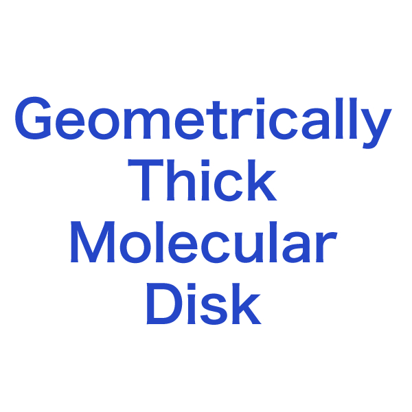
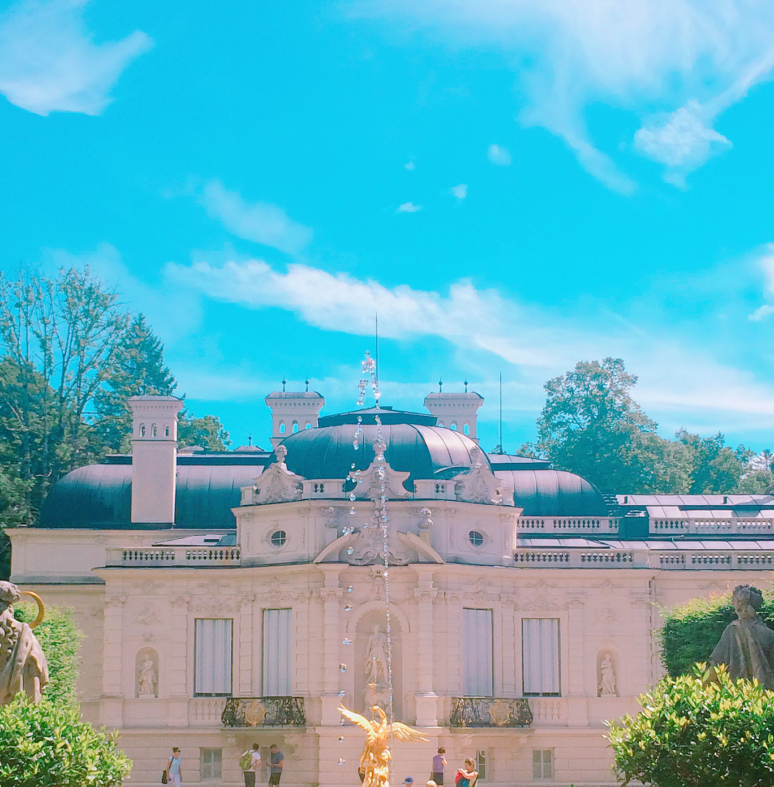
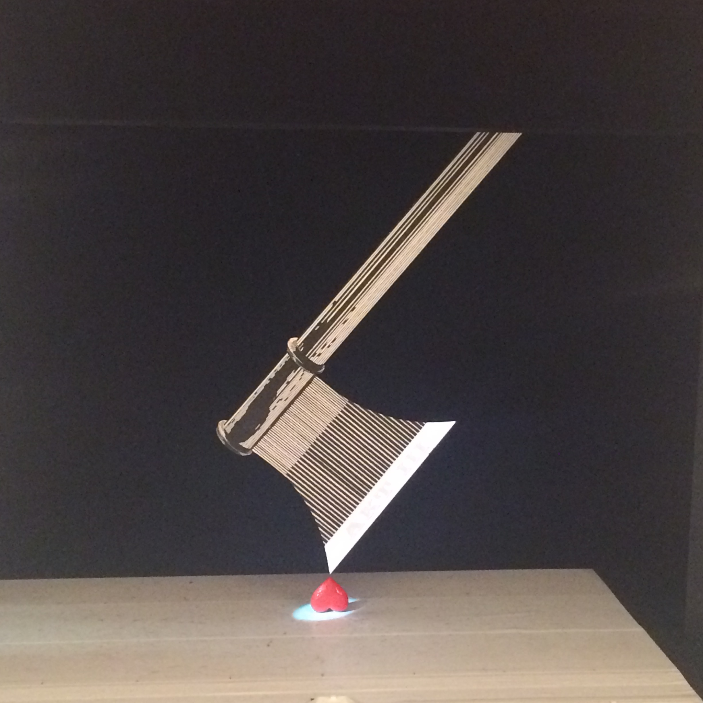
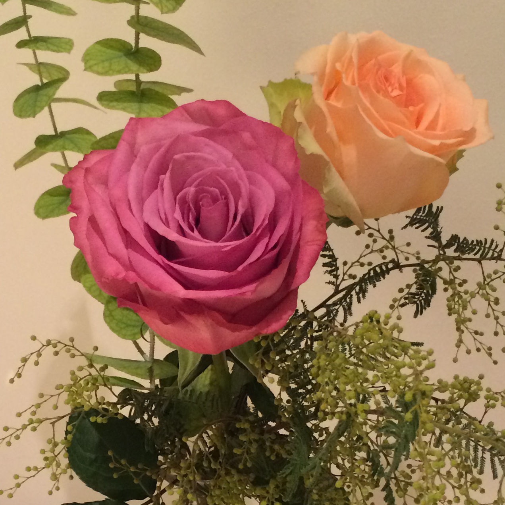
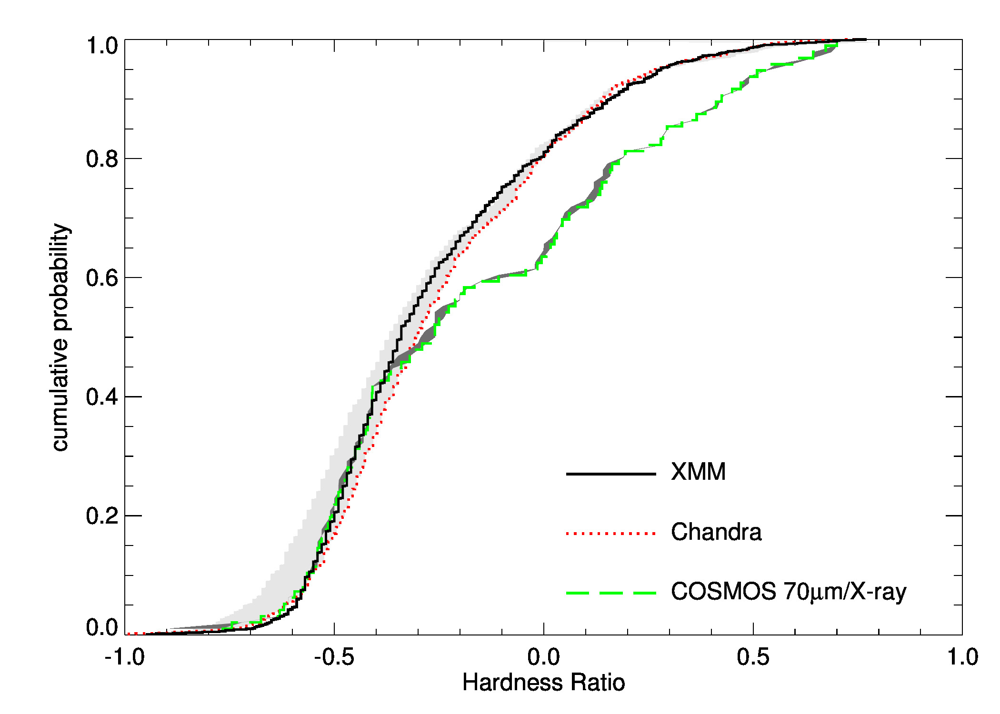
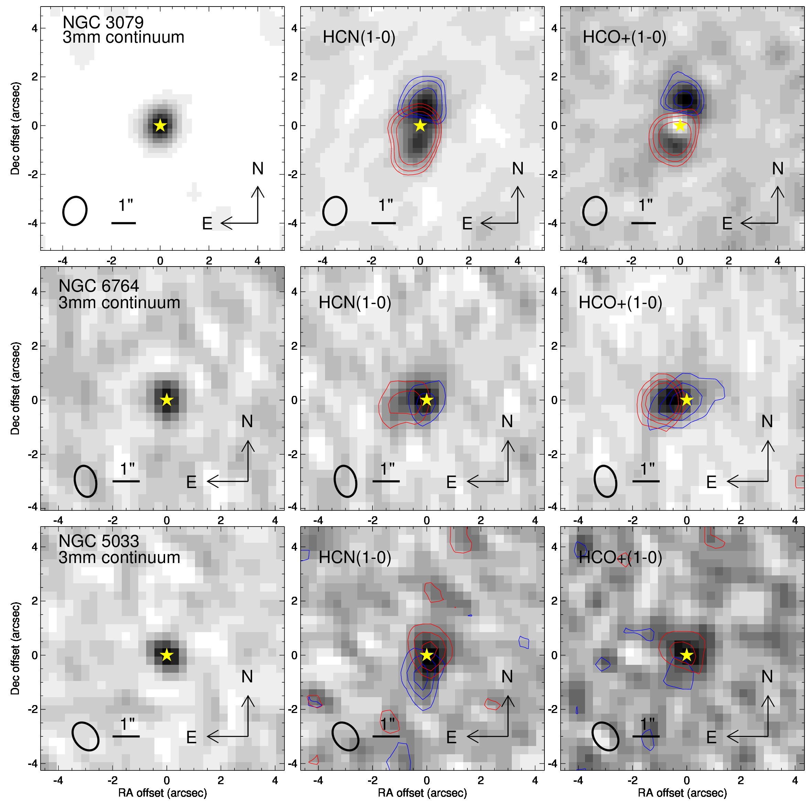
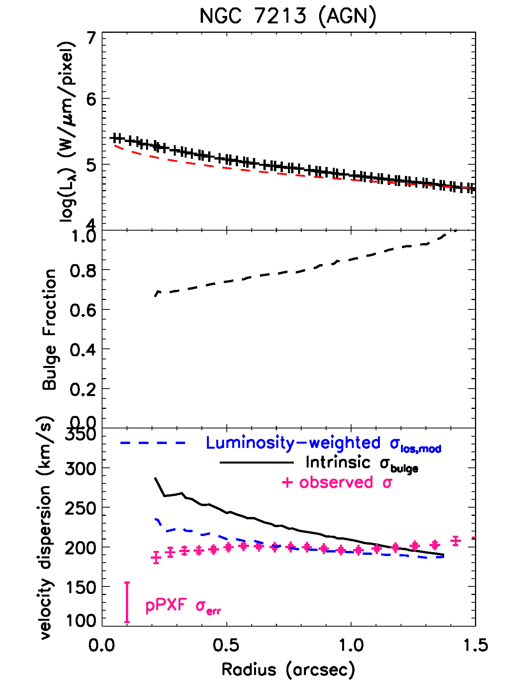
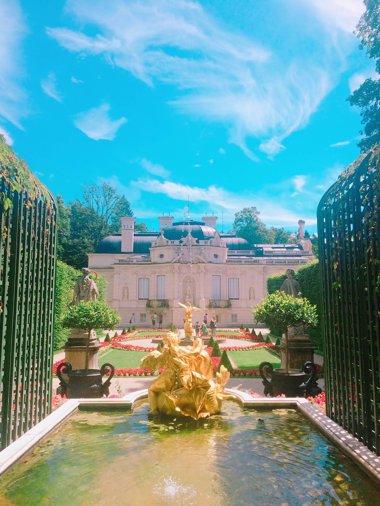
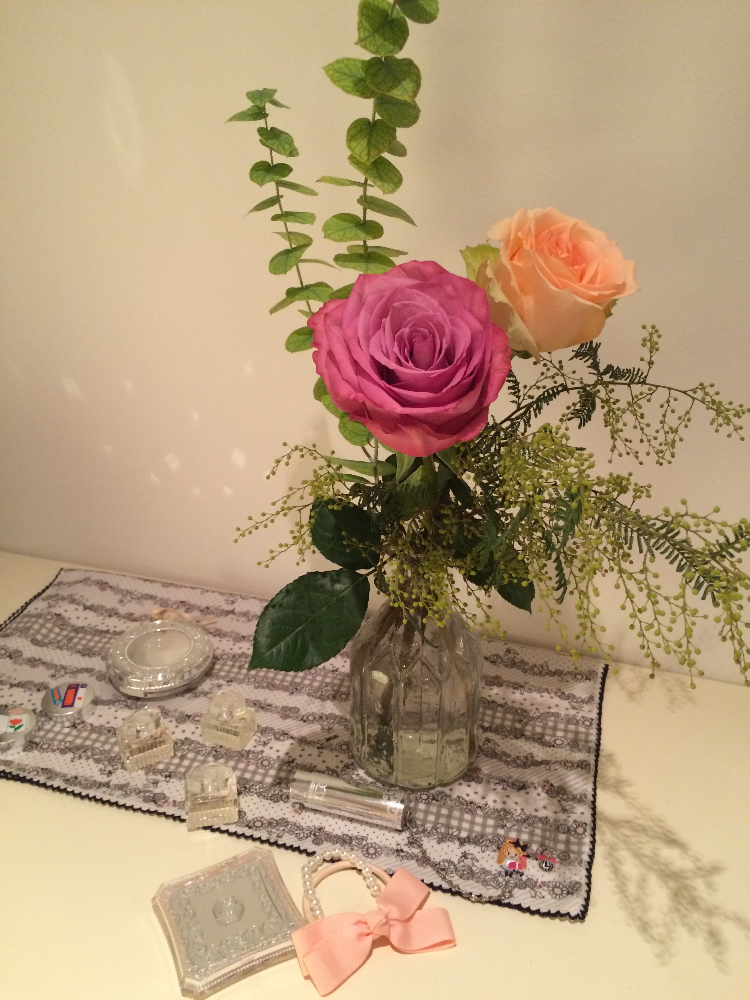

<!DOCTYPE html>
<!--[if lt IE 8 ]><html class="no-js ie ie7" lang="en"> <![endif]-->
<!--[if IE 8 ]><html class="no-js ie ie8" lang="en"> <![endif]-->
<!--[if (gte IE 8)|!(IE)]><!-->
<html class="no-js" lang="en">
<!--<![endif]-->

<head>

   <!--- Basic Page Needs
   ================================================== -->
   <meta charset="utf-8">
   <title>Ming-yi's astronomical website</title>
   <meta name="description" content="">
   <meta name="author" content="">

   <style>
   p.tight { margin-bottom: 0.5em; }
   p.loose { margin-bottom: 2em; }
   </style>

   <!-- Mobile Specific Metas
   ================================================== -->
   <meta name="viewport" content="width=device-width, initial-scale=1, maximum-scale=1">

   <!-- CSS
    ================================================== -->
   <link rel="stylesheet" href="css/default.css">
   <link rel="stylesheet" href="css/layout.css">
   <link rel="stylesheet" href="css/media-queries.css">
   <link rel="stylesheet" href="css/magnific-popup.css">

   <!-- Script
   ================================================== -->
   <script src="js/modernizr.js"></script>

   <!-- Favicons
	================================================== -->
   <link rel="shortcut icon" href="favicon.png">

</head>

<body>

   <!-- Header
   ================================================== -->
   <header id="home">

      <nav id="nav-wrap">

         <a class="mobile-btn" href="#nav-wrap" title="Show navigation">Show navigation</a>
         <a class="mobile-btn" href="#" title="Hide navigation">Hide navigation</a>

         <!-- <ul id="nav" class="nav"> -->
            <!-- <li class="current"><a class="smoothscroll" href="#home">Home</a></li> -->
            <!-- <li><a class="smoothscroll" href="#about">About</a></li> -->
            <!-- <li><a class="smoothscroll" href="#resume">Observations</a></li> -->
            <!-- <li><a class="smoothscroll" href="#testimonials">Sciences</a></li> -->
            <!-- <li><a class="smoothscroll" href="#portfolio">Record</a></li> -->
            <!-- <li><a class="smoothscroll" href="#contact">Contact</a></li> -->
         <!-- </ul> end #nav -->

      </nav> <!-- end #nav-wrap -->

      <div class="row banner">
         <div class="banner-text">
            <!-- <h1 class="responsive-headline">Ming-Yi Lin</h1> -->
            <h1>Ming-Yi Lin</h1>
            <!-- style="font-size: 20px" -->
            <h3>
               I'm a postdoctral researcher in the Department of Physics and Astronomy at the University 
               of Toledo in Ohio, USA. My current scientific research interests include the supermassive 
               black hole (SMBH)-host galaxy co-evolution, feeding and feedback mechanism, and multi-wavelength observations.
               I was a software testing engineer in the <a href="https://cartavis.org/" target="_blank">CARTA</a> project
               in Academia Sinica Institute of Astronomy and Astrophysics (ASIAA) in Taipei, Taiwan. 
               I developed an automated framework for both the backend and frontend to ensure the accuracy and robustness of the software.
               <!-- You can <a class="smoothscroll" href="#about">start scrolling</a> the website
               and check <a class="smoothscroll" href="#about">my CV</a>.</h3> -->
            <!-- <hr /> -->
            <!-- <ul class="social"> -->
            <!-- <li><a href="#"><i class="fa fa-facebook"></i></a></li>
               <li><a href="#"><i class="fa fa-twitter"></i></a></li>
               <li><a href="#"><i class="fa fa-google-plus"></i></a></li>
               <li><a href="#"><i class="fa fa-linkedin"></i></a></li>
               <li><a href="#"><i class="fa fa-instagram"></i></a></li>
               <li><a href="#"><i class="fa fa-dribbble"></i></a></li>
               <li><a href="#"><i class="fa fa-skype"></i></a></li> -->
            <!-- </ul> -->
         </div>
      </div>

      <p class="scrolldown">
         <a class="smoothscroll" href="#about"><i class="icon-down-circle"></i></a>
      </p>

   </header> <!-- Header End -->


   <!-- About Section
   ================================================== -->
   <section id="about">

      <div class="row">

         <div class="three columns">

            

         </div>

         <div class="nine columns main-col">

            <h2>About Me</h2>

            <p>
               I was born in Taipei City, Taiwan. Since childhood, I have been fascinated by the beauty of the natural 
               sciences, which inspired me to pursue a B.S. degree in Earth Sciences. In my sophomore year, I was first 
               introduced to professional astronomy research, which led me to complete an M.S. degree in Astronomy at 
               National Taiwan Normal University and a Ph.D. in Astrophysics at Ludwig-Maximilians-Universität München.
               I am now eager to further explore various aspects of astronomy, including both software and hardware 
               development. My personal interests include watching operas, musicals, and Japanese animation.
            </p>

            <div class="row">

               <div class="columns contact-details">

                  <h2>Contact Details</h2>
                  <p class="address">
                     <span>Ming-Yi LIN</span><br>
                     <span>University of Toledo<br>
                        2801 Bancroft St, Toledo, <br>
                        Ohio, 43606, USA
                     </span><br>
                     <!-- <span>anyone@website.com</span> -->
                  </p>

               </div>

               <div class="columns download">
                  <p>
                     <a href="./Website_Resume-2025-09-23.pdf" class="button"><i class="fa fa-download"></i>Download Curriculum
                        Vitae</a>
                  </p>
               </div>

            </div> <!-- end row -->

         </div> <!-- end .main-col -->

      </div>

   </section> <!-- About Section End-->


   <!-- Resume Section
   ================================================== -->
   <section id="resume">

      <!-- Education
      ----------------------------------------------- -->
      <div class="row education">

         <div class="three columns header-col">
            <h1><span>Observations </span></h1>
         </div>

         <div class="nine columns main-col">
            <div class="row item">
               <div class="twelve columns">
                  <h3>Near Infrared</h3>
                  <h5><p class="tight"> - Keck </p> </h5>
                  <p>
                     I am currently working on the NSF-funded AGN project (PI: <a href="https://www.utoledo.edu/nsm/physast/people/anne-medling.html" target="_blank">Prof. Anne Medling</a>). 
                     My work focuses on analyzing OSIRIS data, including improving the mosaics and studying the gas and stellar kinematics. 
                     I plan to build a dynamical mass model to test the modified Bondi SMBH accretion as well as accretion driven by 
                     gravitational torques.
                  </p>

                  <h5><p class="tight"> - Very Large Telescope (VLT)</p> </h5>
                  <p>
                     The VLT Large Program (PI: <a href="http://www.mpe.mpg.de/ir/userpage.php?id=davies_ric" target="_blank">Dr. Richard Davies</a>) goes into individual ESO observation period (93P, 98P, and 99P). My works
                     include preparing the observation blocks (OBs), doing the data reduction, and improving the calibration pipeline. In
                     order to retrieve higher S/N ratio in absorption lines, I reduce the effects of differential atmospheric refraction by
                     theoretical calculation in the both the image and spectroscopy. Such effect becomes significant for high-resolution
                     observations (e.g. AO mode) at near-infrared wavelengths.
                  </p>
               </div>
            </div> <!-- item end -->

            <div class="row item">
               <div class="twelve columns">
                  <h3>Radio</h3>
                  <h5><p class="tight"> - Institut de Radioastronomie Millimétrique (IRAM)</p> </h5>
                  <p>
                     I studied HCN and HCO⁺ emission in the nuclear regions of nearby AGNs using data from the Plateau de Bure Interferometer (PdBI). 
                     Recently, I have been using the new NOEMA-PolyFix instrument to observe CO gas kinematics and investigate AGN feedback mechanisms.
                  </p>

                  <h5><p class="tight"> - Yuan-Tseh Lee Array (YTLA) </p></h5>
                  <p>
                     It is a 7 small dishes interferometer project leaded by Taiwan (former name:AMiBA). I assist daytime and nighttime
                     observing and work closely with engineers/project scientist to do the troubleshooting, for example: decompose the
                     antennae amplitudes and looking for whether they correlate to the instrumental temperatures. I also measure the quasar
                     continuum flux density, then compare to the System Equivalent Flux Density (SEFD) in order to check the instrument stability, it is a part of commissioning test and verification phases. (On site during Aug 2018, Oct-Dec 2018).
                  </p>

                  <h5><p class="tight"> - Submillimeter Array (SMA) </p></h5>
                  <p>
                     My first professional astronomy research is using SMA data to study the shell kinematics of post-AGB star. I used MIR
                     and MIRID to flag out bad data and reconstruct the image. I also complete one night observation for the summer student
                     group project – searching the methanol signal from high-z galaxy.
                  </p>
               </div>
            </div> <!-- item end -->

            <div class="row item">
               <div class="twelve columns">
                  <h3>Optical</h3>
                  <h5><p class="tight"> - Binocular Telescope (LBT)</p> </h5>
                  <p>
                     The science program belongs to Dr. Eva Wuyts. I was a volunteer student to work with instrument scientists and telescope
                     operators. In the six-day observations, my works included assisting the observing program execution, assessing weather
                     condition, communicating with LBTO staff.
                  </p>
               </div>
            </div>

         </div> <!-- main-col end -->

      </div> <!-- End Education -->


      


      <!-- Portfolio Section
   ================================================== -->
      <section id="portfolio">

         <div class="row">

            <div class="twelve columns collapsed">

               <h1>Scientific Results & Daily Life Photos</h1>

               <!-- portfolio-wrapper -->
               <div id="portfolio-wrapper" class="bgrid-quarters s-bgrid-thirds cf">

                  <div class="columns portfolio-item">
                     <div class="item-wrap">

                        <a href="#modal-01" title="">
                           
                           <div class="overlay">
                              <div class="portfolio-item-meta">
                                 <h5>Obscured AGNs</h5>
                                 <p>Scientific Results</p>
                              </div>
                           </div>
                           <div class="link-icon"><i class="icon-plus"></i></div>
                        </a>

                     </div>
                  </div> <!-- item end -->

                  <div class="columns portfolio-item">
                     <div class="item-wrap">

                        <a href="#modal-02" title="">
                           
                           <div class="overlay">
                              <div class="portfolio-item-meta">
                                 <h5>Geometrically Thick Molecular Disk</h5>
                                 <p>Scientific Results</p>
                              </div>
                           </div>
                           <div class="link-icon"><i class="icon-plus"></i></div>
                        </a>

                     </div>
                  </div> <!-- item end -->

                  <div class="columns portfolio-item">
                     <div class="item-wrap">

                        <a href="#modal-03" title="">
                           
                           <div class="overlay">
                              <div class="portfolio-item-meta">
                                 <h5>Nuclear Star Formation</h5>
                                 <p>Scientific Results</p>
                              </div>
                           </div>
                           <div class="link-icon"><i class="icon-plus"></i></div>
                        </a>

                     </div>
                  </div> <!-- item end -->

                  <div class="columns portfolio-item">
                     <div class="item-wrap">

                        <a href="#modal-04" title="">
                           
                           <div class="overlay">
                              <div class="portfolio-item-meta">
                                 <h5>Linderhof Palace</h5>
                                 <p>Daily life photo</p>
                              </div>
                           </div>
                           <div class="link-icon"><i class="icon-plus"></i></div>
                        </a>

                     </div>
                  </div> <!-- item end -->

                  <div class="columns portfolio-item">
                     <div class="item-wrap">

                        <a href="#modal-05" title="">
                           
                           <div class="overlay">
                              <div class="portfolio-item-meta">
                                 <h5>Ballet</h5>
                                 <p>Daily life photo</p>
                              </div>
                           </div>
                           <div class="link-icon"><i class="icon-plus"></i></div>
                        </a>

                     </div>
                  </div> <!-- item end -->

                  <div class="columns portfolio-item">
                     <div class="item-wrap">

                        <a href="#modal-06" title="">
                           
                           <div class="overlay">
                              <div class="portfolio-item-meta">
                                 <h5>Floristry</h5>
                                 <p>Daily life photo</p>
                              </div>
                           </div>
                           <div class="link-icon"><i class="icon-plus"></i></div>
                        </a>

                     </div>
                  </div> <!-- item end -->

               </div> <!-- portfolio-wrapper end -->

            </div> <!-- twelve columns end -->


            <!-- Modal Popup
	      --------------------------------------------------------------- -->

            <div id="modal-01" class="popup-modal mfp-hide">

               

               <div class="description-box">
                  <h4>Kolmogorov-Smirnov test:</h4>
                  <p>Distribution of XMM and Chandra indicate these samples are drawn from the same
                  population. However, the distribution of 70μm/X-ray sample and X-ray selected samples seem not
                  to be drawn from the same population. The distributions indicate an excess of HR ≥ -0.3, revealing
                  that the cold dust from the host galaxy may be responsible for additional obscuration.</p>
                  <!-- <span class="categories"><i class="fa fa-tag"></i>Branding, Webdesign</span> -->
               </div>

               <div class="link-box">
                  <a href="https://ui.adsabs.harvard.edu/abs/2016MNRAS.456.2735L/abstract" target="_blank">ADS</a>
                  <a class="popup-modal-dismiss">Close</a>
               </div>

            </div><!-- modal-01 End -->

            <div id="modal-02" class="popup-modal mfp-hide">

               

               <div class="description-box">
                  <h4>Dense molecular gas in the nuclear regions of nearby AGNs</h4>
                  <p>We use dense molecular gas HCN(1-0) and HCO+(1-0) at 1” resolution to trace the rotating molecular disk on scales of
                  ~100 pc scale for nearby Seyferts. By modeling the observed kinematics, we find that the geometrically think molecular
                  disk is quite common, indicating the supernovae could potentially being a source to provide the additional energy to
                  maintain the vertical structure.</p>
                  <!-- <span class="categories"><i class="fa fa-tag"></i>Branding, Web Development</span> -->
               </div>

               <div class="link-box">
                  <a href="https://ui.adsabs.harvard.edu/abs/2016MNRAS.458.1375L/abstract" target="_blank">ADS</a>
                  <a class="popup-modal-dismiss">Close</a>
               </div>

            </div><!-- modal-02 End -->

            <div id="modal-03" class="popup-modal mfp-hide">

               

               <div class="description-box">
                  <h4>Nuclear Star Formation</h4>
                  <p>The best sample of simple toy model to explain the
                  trend of radial stellar velocity dispersion. Top panel: The radial
                  luminosity for observed data point (black pluses) and bulge component
                  (red dashed line). Middle panel: The bulge fraction as
                  a function of radius. Bottom panel: The radial stellar velocity
                  dispersion with radius. The black solid line represents the intrinsic
                  bulge velocity dispersion, which is calculated based on the
                  bulge surface brightness prole. Considering the contributions
                  come from both a dynamically hot bulge population (typical is
                  several hundredkm/s) and a dynamically cold young star population
                  (we assume 40-50 km/s), the luminosity-weighted velocity
                  dispersion is presented in blue dashed line. Pink pluses are the
                  observed data with the error bar representing the 1-&sigma; error with
                  respect to the velocity dispersion inside the 2-D elliptical rings
                  at specic radius. We attached the pPXF return mean stellar velocity
                  dispersion error (25km/s in average) in the bottom left
                  corner.</p>
                  <!-- <span class="categories"><i class="fa fa-tag"></i>Branding</span> -->
               </div>

               <div class="link-box">
                  <a href="https://ui.adsabs.harvard.edu/abs/2018MNRAS.473.4582L/abstract" target="_blank">ADS</a>
                  <a class="popup-modal-dismiss">Close</a>
               </div>

            </div><!-- modal-03 End -->

            <div id="modal-04" class="popup-modal mfp-hide">

               

               <div class="description-box">
                  <h4>Linderhof Palace</h4>
                  <p>2017.07.29</p>
                  <span class="categories"><i class="fa fa-tag"></i>Ettal, Germany</span>
               </div>

               <div class="link-box">
                  <!-- <a href="http://www.behance.net" target="_blank">Details</a> -->
                  <a class="popup-modal-dismiss">Close</a>
               </div>

            </div><!-- modal-04 End -->

            <div id="modal-05" class="popup-modal mfp-hide">

               

               <div class="description-box">
                  <h4>Alice in Wonderland Ballet</h4>
                  <p>2017.05.01</p>
                  <span class="categories"><i class="fa fa-tag"></i>München, Deutschland</span>
               </div>

               <div class="link-box">
                  <!-- <a href="http://www.behance.net" target="_blank">Details</a> -->
                  <a class="popup-modal-dismiss">Close</a>
               </div>

            </div><!-- modal-05 End -->

            <div id="modal-06" class="popup-modal mfp-hide">

               

               <div class="description-box">
                  <h4>Floristry</h4>
                  <p>2016.04.10</p>
                  <span class="categories"><i class="fa fa-tag"></i>München, Deutschland</span>
               </div>

               <div class="link-box">
                  <!-- <a href="http://www.behance.net" target="_blank">Details</a> -->
                  <a class="popup-modal-dismiss">Close</a>
               </div>

            </div><!-- modal-06 End -->

            <div id="modal-07" class="popup-modal mfp-hide">

               

               <div class="description-box">
                  <h4>Origami</h4>
                  <p>Proin gravida nibh vel velit auctor aliquet. Aenean sollicitudin, lorem quis bibendum auctor, nisi
                     elit consequat ipsum, nec sagittis sem nibh id elit.</p>
                  <span class="categories"><i class="fa fa-tag"></i>Branding, Illustration</span>
               </div>

               <div class="link-box">
                  <a href="http://www.behance.net" target="_blank">Details</a>
                  <a class="popup-modal-dismiss">Close</a>
               </div>

            </div><!-- modal-07 End -->

            <div id="modal-08" class="popup-modal mfp-hide">

               

               <div class="description-box">
                  <h4>Retrocam</h4>
                  <p>Proin gravida nibh vel velit auctor aliquet. Aenean sollicitudin, lorem quis bibendum auctor, nisi
                     elit consequat ipsum, nec sagittis sem nibh id elit.</p>
                  <span class="categories"><i class="fa fa-tag"></i>Webdesign, Photography</span>
               </div>

               <div class="link-box">
                  <a href="http://www.behance.net" target="_blank">Details</a>
                  <a class="popup-modal-dismiss">Close</a>
               </div>

            </div><!-- modal-01 End -->


         </div> <!-- row End -->

      </section> <!-- Portfolio Section End-->


      <!-- footer
   ================================================== -->
      <footer>

         <div class="row">

            <div class="twelve columns">

               <!-- <ul class="social-links">
                  <li><a href="#"><i class="fa fa-facebook"></i></a></li>
                  <li><a href="#"><i class="fa fa-twitter"></i></a></li>
                  <li><a href="#"><i class="fa fa-google-plus"></i></a></li>
                  <li><a href="#"><i class="fa fa-linkedin"></i></a></li>
                  <li><a href="#"><i class="fa fa-instagram"></i></a></li>
                  <li><a href="#"><i class="fa fa-dribbble"></i></a></li>
                  <li><a href="#"><i class="fa fa-skype"></i></a></li>
               </ul> -->

               <ul class="copyright">
                  <li>&copy; Copyright 2014 CeeVee</li>
                  <li>Design by <a href="http://www.styleshout.com/" title="Styleshout" target="_blank">Styleshout</a>
                  </li>
                  <li>Modified by Ming-yi LIN</li>
               </ul>

            </div>

            <div id="go-top"><a class="smoothscroll" title="Back to Top" href="#home"><i class="icon-up-open"></i></a>
            </div>

         </div>

      </footer> <!-- Footer End-->

      <!-- Java Script
   ================================================== -->
      <script src="http://ajax.googleapis.com/ajax/libs/jquery/1.10.2/jquery.min.js"></script>
      <script>
         window.jQuery || document.write('<script src="js/jquery-1.10.2.min.js"><\/script>')
      </script>
      <script type="text/javascript" src="js/jquery-migrate-1.2.1.min.js"></script>

      <script src="js/jquery.flexslider.js"></script>
      <script src="js/waypoints.js"></script>
      <script src="js/jquery.fittext.js"></script>
      <script src="js/magnific-popup.js"></script>
      <script src="js/init.js"></script>

</body>

</html>